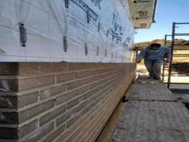
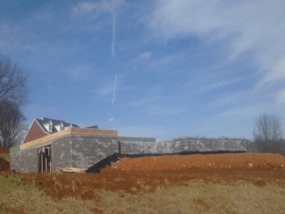
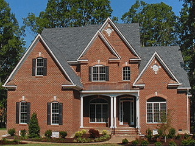
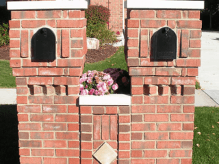
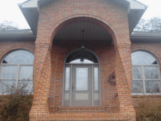
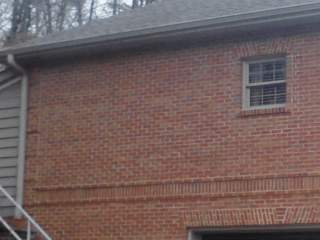

How to Choose the Right BrickTop Level Masonry's Reference Library
Picking a brick isn't as easy as it sounds. With the proliferation of styles, sizes, qualities and costs, making the right choice can be critical. The owner and architect/designer must identify which qualities and properties of brick are appropriate to consider for a particular project.
Brick selection is based on several factors: aesthetics; physical properties (compressive strength and absorption for durability); application (moisture penetration, movement of materials and structural loads); cost; and availability. "While aesthetics are most often the primary consideration, durability, availability and cost are also important," says Jim Bryja, manager of engineering services, General Shale Products Corporation, Johnson City, Tenn. "The selection process can be difficult since each person involved in using brick has different requirements. Unfortunately, seldom is the mason contractor a part of the selection process."
The use of brick as a building material dates back centuries — General Shale has a brick in its museum dated from 10,000 years ago, found in the area of the Biblical city of Jericho. Because of brick's enduring qualities and limitless appearances and effects, designers can satisfy their creative styles. Brick is readily available in many sizes, colors, textures and shapes that can be adapted to achieve virtually any desired style or expression. Brick's small module can be related to the scale of the wall.
Brick size influences scale, appearance and wall cost — larger units require fewer bricks, normally resulting in less labor. These sizes can be combined in such a way as to create different appearances and patterns. When specifying the size of units, dimensions should be listed in the following order: thickness by height by length. The dimensions given should be specified, not nominal, dimensions.
Brick manufacturers also offer a wide variety of colors from which to choose. Color is determined by raw materials and firing temperatures. Colors range from reds and burgundies to whites and buffs, with many manufacturers producing more than 100 colors. Many of these color variations are created during the firing process when temperature variations and the order in which the units are stacked in the kiln determine shades of light and dark. Sand, slurry or ceramic glazes can be applied to the surface to achieve colors not possible with some types of clay.
There are endless possibilities when combining units of contrasting colors in bands or other patterns. Sample panels can aid in selecting the desired color by showing the finished appearance.
Choice of cleaning materials will be influenced by brick color. Acid cleaners can alter the color of lighter brick. Further, the presence of coatings requires an investigation into the cleaning technique and equipment to be used. For example, pressure washers can remove sand and some slurry, changing the look of the brick.
Another aesthetic feature to consider when selecting brick is the texture. Textures of brick can be smooth, wirecut (velour), stippled, bark, brushed and more. The texture interacts with light and creates differing and interesting shadows. Texture also has an influence on how easily the brickwork can be kept clean because mortar can fill the spaces in rough textured brick and make cleaning more difficult.
Unique design features can easily be achieved by using special brick shapes. Brick can be molded and formed into any shape, from simple sloped sill shapes to fancy water table brick.
"For most manufacturers, molded shapes are easier to produce than extruded shapes, because the molded, or soft-mud process is more adaptable to making brick shapes than the extruded process," comments Bryja. "However, making very large shapes can be difficult in either process because of problems with proper drying and firing."
There are many physical properties, which may influence brick selection. Some of these include those influencing durability and initial rate of absorption. Physical properties required for proper performance are given in the appropriate American Society for Testing and Materials (ASTM) specification for brick.
Durability Currently, there are two accepted methods for demonstrating durability under ASTM standards: 1) durability as predicted by compressive strength, absorption and saturation coefficient, or 2) durability as determined by compressive strength and passing 50 cycles of the freeze and thaw test. Specific criteria in each ASTM specification determine grade designations.
Brick is assigned a grade of severe, moderate or negligible weathering. Because of the varying climates experienced in North America and the great number of applications of brick, specific grades are required in many cases.
Absorption can be broken into two distinct categories: absorption and initial rate of absorption (IRA). Both are important in selecting the appropriate brick.
Absorption of a brick is expressed as a percentage, and defined as the ratio of the weight of water that is taken up into its body divided by the dry weight of the unit. Water absorption is measured in two ways: 1) submerging the test specimen in room temperature water for a period of 24 hours, and 2) submerging the test specimen in boiling water for five hours. These are known as the 24-hour cold-water absorption and the five-hour boiling water absorption, respectively. These two are used to calculate the saturation coefficient by dividing the 24-hour cold-water absorption by the five-hour boiling. The saturation coefficient is used to help predict durability.
The initial rate of absorption or suction is the rate of how much water a brick draws in during the first minute after contact with water. The suction has a direct bearing on the bond between brick and mortar. It has been shown by test results that when a brick has high suction (over 30 grams/min/30-square inches), a strong, watertight joint may not be achieved. Therefore, high suction brick should be wetted for three to 24 hours prior to laying to reduce the suction and allow the brick's surface to dry.
Very low suction brick should be covered and kept dry on the jobsite. Brick manufacturers can furnish values of IRA and saturation coefficient of the selected units. The material specifier or supplier should inform the mason contractor about the suction of the brick prior to construction.
Suction is perhaps the most important physical property to the mason contractor. Bricklayer productivity is influenced by the suction and the layout of the portion of brickwork being laid. Weather conditions when working also influence the reaction of brick and mortar.
Building codes require that brick with an initial rate of absorption greater than 30-grams/min/30-square inches at the time of laying be wetted. This places added requirements on the contractor. Knowing the brick's initial rate of absorption when preparing the bid will permit the mason contractor to provide a more accurate price.
Compressive strength. The strength of a unit is used to determine durability and also compressive strength of a wall assembly. While most brick is specified on the basis of strength, it is important not to sacrifice properties of durability and bond for higher compressive strengths. Most brick currently produced have strengths ranging from 3,000 psi to over 20,000 psi, averaging around 10,000 psi. Achieving sufficient compressive strength with brick is seldom a problem.
Application. A building must perform the functions for which it is designed. The materials selected for a project must also perform as intended. "The designer must consider all factors that a wall or material must withstand," Bryja notes. "Some of the more important factors include moisture penetration, accommodating anticipated movement of materials, and structural loads. No one standard assembly is suitable for all localities, occupancies or designs; therefore, the designer must evaluate each factor and its relative effect on the selection of a material or assembly."
Moisture penetration. The use of quality materials and workmanship is essential in obtaining a satisfactory degree of water resistance. When water passes through brick masonry walls, it invariably does so through separations or cracks between the brick units and the mortar. It is virtually impossible for significant amounts of water to pass directly through a brick unit. Therefore, brick units that develop a complete bond with mortar offer the best moisture resistance. Brick and mortar properties should be compared in order to provide compatible materials that result in more watertight walls.
Currently, there are no requirements for the degree of water resistance of a wall. The recommended practice is to use a drainage type wall, regardless of the brick selected.
Accommodating material movements. Brick undergoes movement from both temperature variation and moisture expansion. These properties are not critical to the selection or laying of brick, but they are important to designers and these movements should be provided for in design and construction.
Structural loads. Ability to withstand either gravity or lateral loads relies heavily on brick strength, mortar strength, and strength of the wall assembly. Compressive strength requirements found in the ASTM specifications for brick are based on durability performance. Structural analysis may require a higher compressive strength in order to resist the applied loads. It is common to use high-strength units in load-bearing or reinforced brick masonry projects.
Cost. Material selection is often based on initial cost only. Although initial cost is important, lifecycle cost is a better tool for making critical decisions. "When deciding between different materials, all costs involved including labor and maintenance costs, future value and life expectancy should be considered," explains Bryja.
The selling price of brick is governed by many factors, including manufacturing methods, size and appearance of the unit. When considering different brick, one must also consider shipping costs. Since most prices quoted are plant prices, distance between the manufacturing plant and the jobsite is a major determinant of shipping costs.
Brick manufacturers and distributors can supply brick prices and shipping prices. Large increases in brick costs do not result in large increases in wall costs. Better mason productivity may actually lower in-place costs. The mason contractor is important in making this determination.
Availability. The availability of brick fluctuates with the time of the year and current construction trends and demands. On average, brick production time runs about five days from pugging (mixing) of the clay to the finished, fired product. This can change depending on many factors such as variations in raw materials, the forming process and kiln types.
Many brick manufacturers have stockpiles of brick, but usually only a small quantity of each type. This may satisfy smaller jobs, but for projects requiring large quantities of brick, a scheduled production run must be made for the job. Most manufacturers have a set schedule as to when they produce a certain brick shade. It is at this time that the size of the run will be increased to accommodate the large order. It is wise to question the manufacturer as to a brick's availability.
Since there is an increasingly wide selection of brick choices, selecting the appropriate material is important to the project's longevity and appearance.
This article was originally written by: Gregg Borchelt, P.E. Vice President, Engineering and Research Brick Industry Association (BIA) Reston, Va. and it was originally published in Masonry Magazine; the original article can be accessed by clicking here.
Top Level Masonry's purpose in republishing this article is to emphasise the importance of choosing the right brick and in choosing the right brick masonry company. We exist as a resource to help you in your next project - you can contact us by clicking here
- Color, Texture and Shape
- Durability
- Absorption
- Compressive Strength
- Application
- Moisture Penetration
- Structural Loads
- General Cost
- Availability
- Contact


- Color, Texture and Shape
- Durability
- Absorption
- Compressive Strength
- Application
- Moisture Penetration
- Structural Loads
- General Cost
- Availability
- Contact



